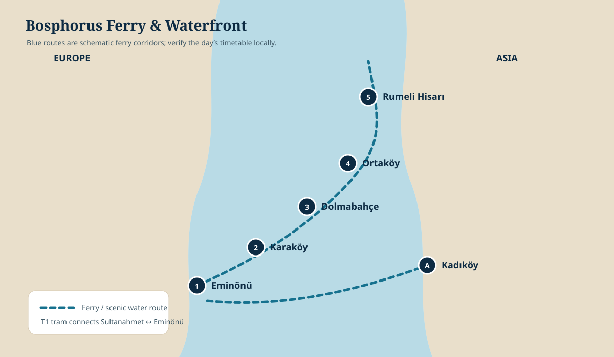

Istanbul chapters
TransitTram + ferry
WalkingFlexible
Best seatOutside deck
Best finishGolden-hour water
Let the water organize the day
Use the Spice Bazaar as a compact opening, then move onto the water. Avoid turning the Bosphorus into a checklist of neighborhoods—the changing shoreline is the experience.
1 · MorningTram to Eminönü
2 · BrowseSpice Bazaar
3 · Main eventPublic ferry
4 · FinishWaterfront pause


Travel intelligence
Choose your pace: A simple out-and-back ferry ride is enough. Add a waterfront neighborhood only when everyone still has energy after the crossing.
Moment to pause
Watch the traffic of two continents
Spend ten quiet minutes without navigating. Ferries, cargo vessels, fishing boats and commuter traffic reveal why the Bosphorus is not a scenic edge but Istanbul’s central artery.
Photographs are credited on the Photo Credits page.
Bosphorus ferry orientation
